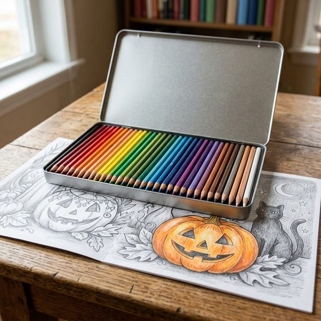
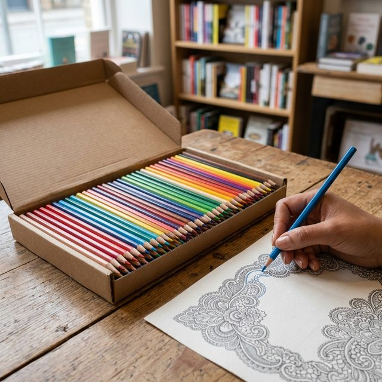
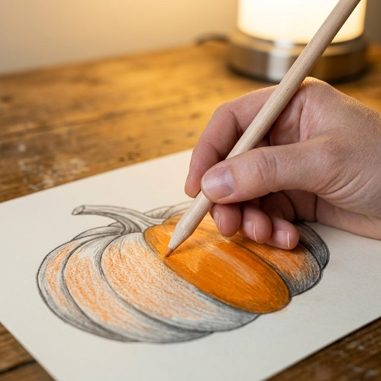
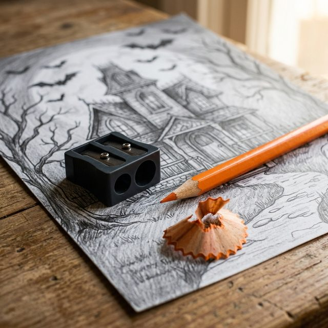
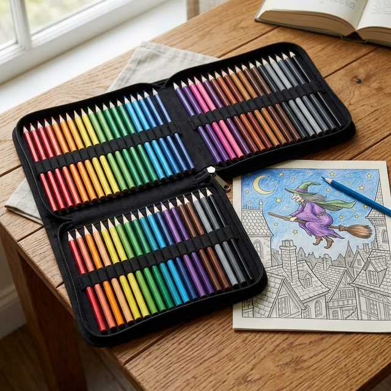

What a grayscale page is asking of your pencils
In an ordinary colouring book the picture is black outlines on white paper. You supply every bit of light and shade yourself. In a grayscale book the shading is already printed in grey: the dark folds of a witch's cloak, the glow on a pumpkin, the shadow under a gate. Your colour sits on top of that grey, and the grey shows through it. That is the whole trick. A light pass of orange over a shaded pumpkin looks round and lit, because the printed shadow does the work.
It also means the pencil has to be transparent and soft enough to glide over the grey without scrubbing it out. A hard, waxy school pencil does the opposite: it skates over the dark areas, leaves white speckle in the paper grain, and the picture goes flat and chalky. That is the "it looks worse coloured in than it did in grey" problem, and it's the pencil, not the person.
Soft wax or hard oil? Both have a job
Soft, wax-based (Prismacolor Premier)
Creamy, lays down a lot of colour in one pass, blends beautifully over printed shading. The pencil most grayscale colourists end up with. Downside: the points wear fast and snap if you press hard, so sharpen often and go gently.
Harder, oil-based (Polychromos, Staedtler)
Keeps a point for ages, so fine detail like whiskers, lace and lettering stays crisp. Builds colour slowly in thin layers. Less dramatic blending, far less breakage. A good second set, or a first set if you like control more than glow.
A set of 48 is plenty. Grayscale pages want a few colours used well, not 150 used once.
The colourless blender: the one thing beginners skip
A colourless blender is a pencil with no pigment in it, just the binder. Rub it over an area you've coloured and it melts the strokes together, fills the white grain of the paper, and makes the surface look painted rather than scribbled. On grayscale pages it is close to magic, because it also softens the edge where your colour meets the printed shadow. If you buy one extra thing, buy this.
Four small habits that matter more than brand
- Light pressure first. Build colour in two or three thin layers instead of one heavy one; you can always add, you can't take away.
- Follow the grey. Press a little harder where the print is darker and ease off where it's lighter, and the form appears on its own.
- Keep a blunt point for shading and a sharp one for edges; a two-hole sharpener gives you both.
- Put a spare sheet under the page so the pencil doesn't pick up the texture of the page beneath.
Soft or hard, at a glance
| Pencil | Core | Blending over grey | Point for detail | Set size | Best for |
|---|---|---|---|---|---|
| Prismacolor Premier | Soft wax | Excellent, one pass | Softens quickly | 48 | Most grayscale pages |
| Staedtler 146C | Harder | Modest, thin layers | Stays crisp | 72 | Lace, whiskers, lettering; budget |
| Faber-Castell Polychromos | Oil | Good in layers | Stays crisp | 24 | Fine detail, lightfast work |
| Prismacolor Colorless Blender | Binder only | Smooths what is there | n/a | 12 | Finishing every page |
One thing to know when you search: "grayscale pencils" also brings up sets of grey-toned pencils. Those are for drawing in shades of grey. For a grayscale colouring book you want ordinary coloured pencils; the grey is already printed on the page.
The six things worth buying
These are the picks we'd give a friend starting out. The links go to Amazon; as an Amazon Associate we earn from qualifying purchases, and that is what keeps the free printable pages free.

Prismacolor Premier Soft Core, 48 colours
The classic for grayscale. Soft and creamy, covers the printed shading in one gentle pass and blends like butter.
See it on Amazon
Staedtler 146C, 72 colours
Harder lead that keeps its point, so lace, whiskers and lettering stay crisp. Less blending, far fewer broken tips.
See it on Amazon
Prismacolor Colorless Blender pencils, 12
Melts your strokes together and fills the paper grain so the page looks painted. Twelve lasts a very long time.
See it on Amazon
Prismacolor Premier two-hole sharpener
One hole gives a long drawing point, the other a blunt shading point. Soft pencils need a gentle, sharp blade; this is it.
See it on Amazon
BTSKY 72-slot pencil case
A set you can see is a set you use. Holds 72 in colour order and zips shut, so it travels to the kitchen table and back.
See it on AmazonFaber-Castell Polychromos, tin of 24
The artist's oil-based pencil: lightfast, break-proof, and a joy for fine detail. Dearer, so buy the 24 and add singles later.
See it on AmazonPrices move about; check the Amazon page. We have no arrangement with any of these brands; they're simply what works on our pages.
Quick answers
What are the best pencils for grayscale colouring?
Soft, wax-based pencils such as Prismacolor Premier work best on grayscale pages: they lay transparent colour over the printed shading in one gentle pass and blend easily. Harder oil-based pencils such as Faber-Castell Polychromos or Staedtler keep a fine point for detail. A colourless blender pencil smooths the strokes so the page looks painted.
Why do ordinary pencils look flat on grayscale colouring pages?
A grayscale page already carries the shadows in printed grey. Hard, waxy school pencils skate over the dark areas and leave white speckle in the paper grain, so the picture goes chalky. Soft, transparent pencils sink into the grey and let the printed shading show through.
What does a colourless blender pencil do?
It is a pencil with no pigment, only binder. Rubbed over coloured areas it melts the strokes together, fills the paper grain and softens the edge where your colour meets the printed shadow, so the surface looks painted rather than scribbled.
Do I need a large set of pencils for grayscale colouring?
No. A set of 48 is plenty. Grayscale pages want a few colours used well in thin layers, not 150 colours used once.
Can I try grayscale colouring before buying pencils?
Yes. Every grayscale book on The Halloween Shelf has sample pages you can print at home on the printable Halloween pages.
Try the pencils on a real page first
Every grayscale book on the Halloween Shelf has free sample pages you can print at home: ten grayscale pages, one PDF each, Letter or A4. Colour one with whatever pencils you have, then one with a soft set, and you'll see the difference in five minutes.
Print the free grayscale pages